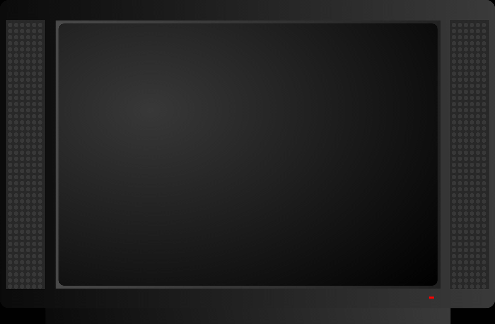
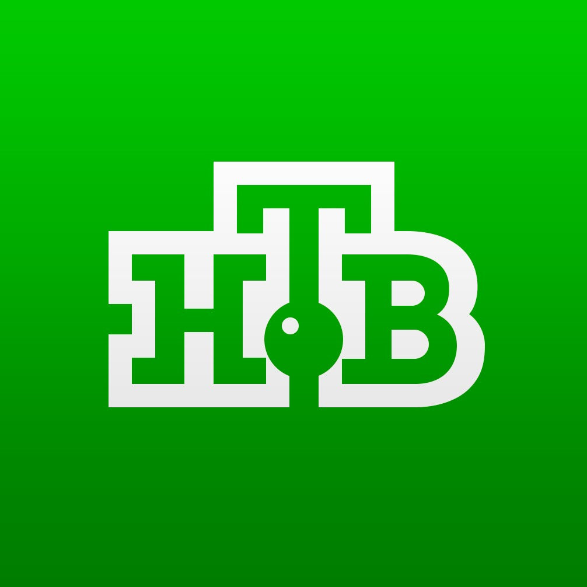

|  |
Цифровые телеканалыСмотреть онлайн |
Первый канал 546 МГц |
Россия 1 546 МГц |
Матч ТВ 546 МГц |
 НТВ 546 МГц |
Пятый Канал 546 МГц |
Россия - Культура 546 МГц |
Россия 24 546 МГц |
Карусель 546 МГц |
ОТР 546 МГц |
ТВ Центр 546 МГц |
РЕН ТВ 498 МГц |
СПАС 498 МГц |
СТС 498 МГц |
Домашний 498 МГц |
ТВ3 498 МГц |
Пятница! 498 МГц |
Звезда 498 МГц |
МИР 498 МГц |
ТНТ 498 МГц |
МУЗ ТВ 498 МГц |